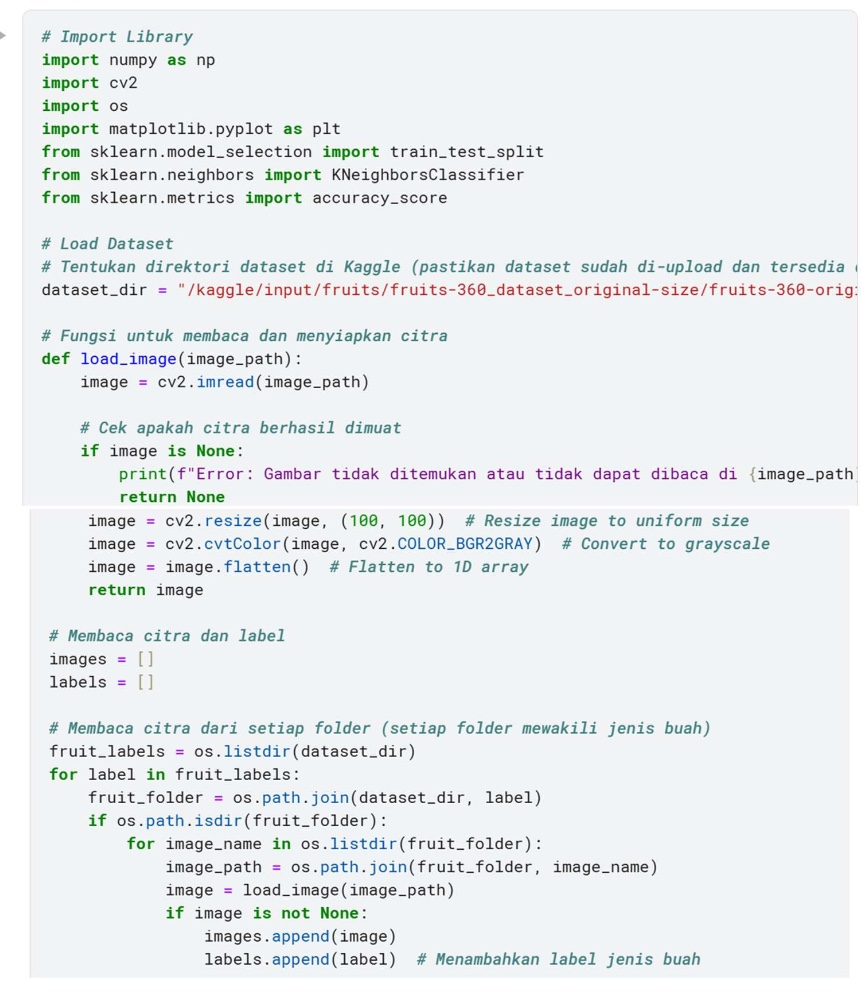
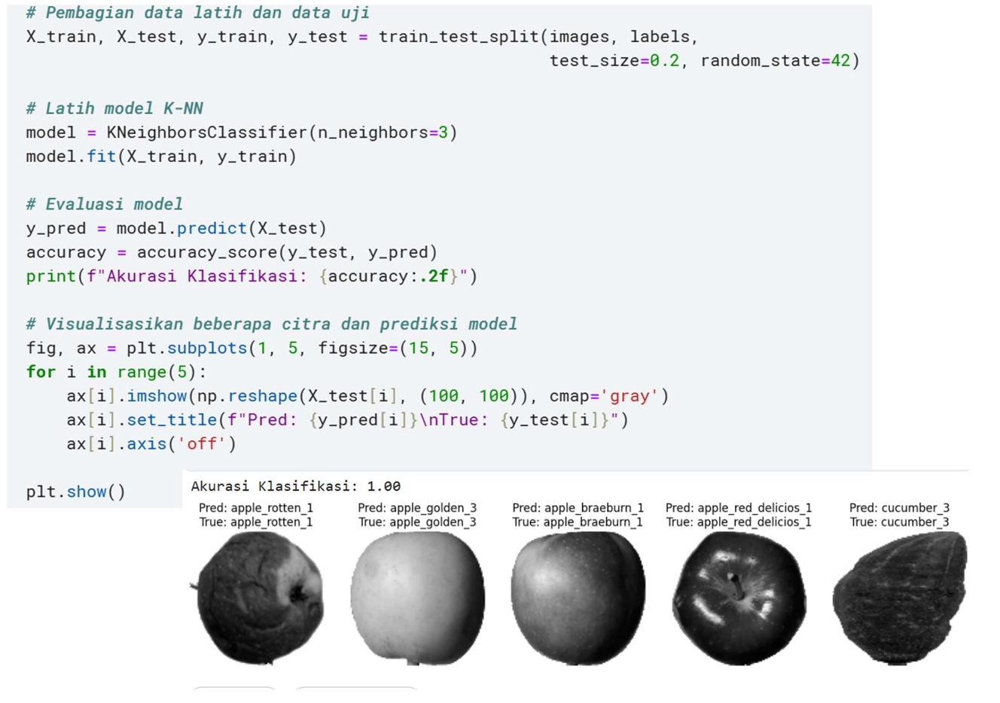
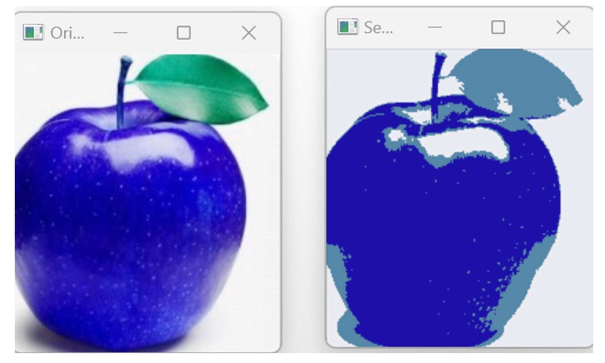

Pertemuan 14: PENGOLAHAN CITRA: PENGANTAR PENGENALAN POLA DAN MACHINE LEARNING
Materi ini membahas Pengenalan Pola dan Mencoba Machine Learning dalam Pengolahan Citra Digital
Sub-Topik:
- Pengantar Pengenalan Pola
- Machine Learning dalam Pengolahan Citra
Pengantar Pengenalan Pola
Pengolahan citra digital adalah proses untuk memanipulasi citra yang diperoleh melalui alat digital (seperti kamera, scanner, atau sensor) untuk menghasilkan informasi atau output yang lebih berguna. Citra digital terdiri dari piksel yang menyusun gambar, di mana setiap piksel memiliki nilai intensitas yang menggambarkan warna atau level terang gelap.
Pengenalan pola (pattern recognition) adalah cabang dari kecerdasan buatan yang berfokus pada identifikasi pola dalam data. Dalam konteks pengolahan citra, pengenalan pola digunakan untuk mengenali objek atau fitur tertentu dalam citra yang dapat diubah menjadi informasi yang lebih bermakna.
Langkah-langkah dalam Pengenalan Pola
- Pra-pemrosesan Citra: Menyaring dan meningkatkan kualitas citra untuk memudahkan pengenalan pola.
- Ekstraksi Fitur: Mengidentifikasi fitur-fitur penting dalam citra seperti tepi, sudut, atau tekstur.
- Klasifikasi: Menerapkan algoritma untuk memetakan pola yang diekstraksi ke dalam kategori tertentu.
Machine Learning dalam Pengolahan Citra
Machine learning (ML) adalah teknik di mana komputer dapat belajar dari data dan membuat prediksi atau keputusan tanpa diprogram secara eksplisit. Dalam pengolahan citra, machine learning digunakan untuk melatih model agar dapat mengenali pola dalam citra dan melakukan klasifikasi atau deteksi objek.
Algoritma Machine Learning dalam Pengolahan Citra:
- Klasifikasi: Seperti K-Nearest Neighbors (K-NN), Support Vector Machine (SVM), dan Decision Trees.
- Clustering: Seperti K-Means, DBSCAN, dan Hierarchical Clustering.
- Jaringan Saraf Tiruan (Neural Networks): Terutama Deep Learning dengan Convolutional Neural Networks (CNNs) yang efektif untuk klasifikasi citra
Penerapan Machine Learning dalam Pengolahan Citra
- Klasifikasi Citra: Menggunakan teknik machine learning untuk mengklasifikasikan citra ke dalam kategori yang telah ditentukan, seperti mendeteksi buah-buahan berdasarkan bentuk dan warnanya.
- Deteksi Objek: Menggunakan teknik seperti CNN untuk mendeteksi objek dalam citra (misalnya mendeteksi mobil pada citra jalan raya).
- Segmentasi Citra: Memisahkan citra menjadi beberapa bagian atau segmen berdasarkan fitur tertentu yang ada di dalamnya.
Jenis-jenis Pembelajaran dalam Machine Learning
- Supervised Learning: Model dilatih menggunakan data berlabel, di mana setiap citra dilengkapi dengan label yang menunjukkan kategori objek dalam citra tersebut.
- Unsupervised Learning: Model belajar dari data yang tidak berlabel, mencari pola atau grup dalam citra tanpa bantuan label.
- Semi-supervised Learning: Menggunakan data berlabel dan tidak berlabel untuk melatih model.
- Reinforcement Learning: Model belajar dengan mencoba berbagai tindakan dan mendapatkan feedback berdasarkan hasilnya.
Contoh Penerapannya Pada Program
Gambar 14.1: Kode Klasifikasi Citra Buah Menggunakan Dataset Friuts 360
Gambar 14.2: Kode & Output Klasifikasi Citra Buah Menggunakan Dataset Friuts 360

Gambar 14.3: Kode Segmentasi Citra K-means Clustering
Gambar 12.4: Output Segmentasi Citra K-means Clustering